도메인 모델
도메인 모델은 엔티티가 서로를 어떻게 소유하는지를 나타냅니다. 격리 기준·자산 기준·카탈로그 세 묶음으로 나뉘고, 자금 이동은 지갑이 아니라 별도 레코드로 남습니다. 각 엔티티가 무엇인지는 계정 계층과 지갑 계층에 있습니다.
격리와 자산의 구성
엔티티는 두 묶음으로 나뉩니다. 격리 기준이 소유를 정하고 자산 기준이 내용물을 정합니다. 앞쪽은 어느 데이터가 누구 것인지를, 뒤쪽은 그 안에 무엇이 들어가는지를 답합니다.

두 묶음이 만나는 곳이 둘입니다. Workspace가 WorkspaceVault를 직접 소유하고, Account가
AccountVault를 소유합니다. 그 아래로는 구조가 같습니다. vault가 토큰별 wallet을 묶습니다.
Account의 소속
Account는 Tenant에만 속합니다. Account가 Workspace에도 직접 연결된 구조를 떠올릴 수 있는데, 지금 스키마는 그렇지 않습니다. tenant로 스코프되는 데이터는 workspace 컬럼을 두지 않습니다.
격리를 이렇게 설계했기 때문입니다. 두 컬럼을 다 두면 workspace만으로 조회하는 쿼리가 문법상 성립하고, 그 쿼리는 같은 workspace의 다른 파트너사 데이터를 함께 냅니다.
격리 기준에서 workspace에 직접 속하는 것은 운영자 계정입니다. 계약 소유자와 인증 방식이 하나로 정해지는 API 경로 묶음인 운영자 표면(자세히)의 격리 키가 workspace이기 때문입니다.
다만 그 저장소는 지갑이 아니라 정책 엔진 쪽입니다. 지갑은 어드민·세션 테이블을 두지 않습니다. 계층의 자세한 것은 계정 계층에 있습니다.
자금 이동 레코드
자금 이동은 지갑이 아니라 별도 레코드에 남습니다. 지갑은 잔고를 갖고 이동은 기록을 갖습니다. 일곱 이동이 각자 자기 테이블을 갖고, 어느 지갑에서 출발했는지로 지갑과 연결됩니다.

WorkspaceVaultTransfer만 같은 엔티티에 두 번 연결됩니다. 출발 vault와 도착 vault가 둘 다
WorkspaceVault라 한 레코드가 두 개를 참조합니다.
계정 귀속 출금은 그림에서 워크스페이스 지갑에서 나가지만 Account 단위로 생성됩니다. 자금이 어느 지갑에 있는지와 누구에게 귀속되는지가 서로 다른 기준이기 때문입니다.
주소록의 연결 지점
주소에 등재 근거를 붙이는 장부인 주소록(자세히)은 출금에는 입력으로, 입금에는 관측으로 연결됩니다.
출금에서는 목적지 주소의 등재 여부가 정책 입력입니다. 입금은 다릅니다. 온체인 입금은 거부할 수 없어서 등재 여부를 묻는 단계가 없습니다.
대신 발신처가 그 계정 주소록에 있는지를 확정 통지에 sourceRegistered로 포함해 보냅니다. 통지는
온체인 이벤트를 파트너사에 보내는 아웃바운드 호출입니다. 파트너사는 그 값을 해제와 집금 판단에
쓰고, 계약은 웹훅에 있습니다.
주소록은 둘로 갈리고 격리 기준이 다릅니다. AccountAddressBook은 tenant 단위이고,
WorkspaceAddressBook은 workspace 단위입니다.
등재가 곧 허가는 아닙니다. 미등재는 거절 사유가 아니라 정책 평가의 입력입니다.
등재 근거와 회수, 그 반영 시점은 주소록에 있습니다.
지갑과 토큰의 대응 관계
지갑당 토큰은 하나입니다. AccountWallet과 WorkspaceWallet은 둘 다 토큰 단위로 만들어집니다.
유일성은 vault와 token의 조합에서 성립합니다.
그래서 “이 계정의 USDC 지갑”으로 지갑 하나가 유일하게 식별됩니다. 왜 토큰 단위인지는 지갑 계층에 적었습니다.
이 그림에 없는 것
없는 것이 둘입니다.
정책 판단 구간이 없습니다. 이동 레코드가 생기고 온체인으로 나가는 사이에 서명 게이트가 있는데, 그 구조는 도메인 모델이 아니라 정책에 있습니다.
최종 사용자별 원장이 없습니다. 사용자마다 얼마인지를 매기는 원장은 파트너사 것이고, Wallet SDK는 지갑 단위로만 잔액을 관리합니다. 입금·집금·출금이 언제 확정됐는지만 기록합니다. 어느 이동이 무엇을 뜻하는지는 이동 종류에 있습니다.